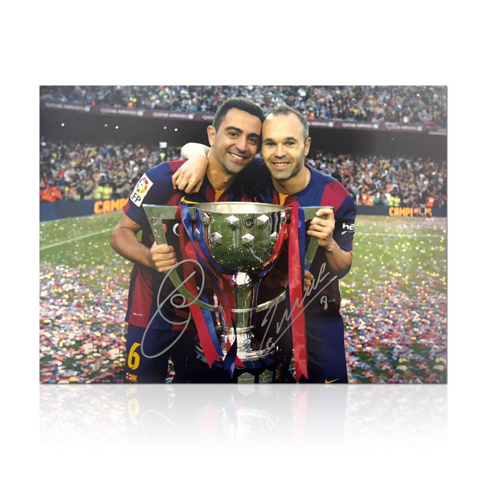
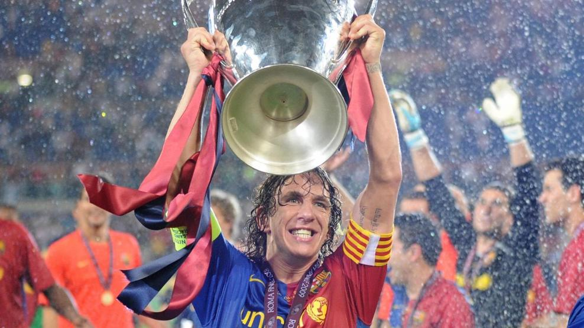

Legenden des FC Barcelona

Bild: Xavi und Iniesta (Quelle: Wikimedia Commons, CC BY-SA 2.0)
Kein anderer Klub auf der Welt hat eine solche Sammlung von Legenden wie der FC Barcelona. Viele dieser Spieler haben den Klub und den Fussball insgesamt nachhaltig geprägt. Auf dieser Seite stelle ich einige der bekanntesten Persönlichkeiten kurz vor. Es ist natürlich nur eine Auswahl - die Liste könnte noch viel länger sein.
Lionel Messi (2004-2021)
Messi ist für viele Fans der beste Fussballspieler aller Zeiten. Er gewann achtmal den Ballon dOr und stellte unzählige Rekorde auf. Mit Barca holte er zehnmal die Meisterschaft und viermal die Champions League. Sein Wechsel nach Paris im Sommer 2021 brachte ganz Katalonien zum Weinen.
Johan Cruyff (1973-1978 / Trainer 1988-1996)
Cruyff war Spieler und Trainer in einer Person. Erst spielte er fünf Jahre in Barcelona und revolutionierte den Stil. Später formte er als Trainer das berühmte Dream Team und gewann 1992 den ersten Europapokal. Ohne Cruyff wäre der moderne FC Barcelona nicht denkbar.
Xavi Hernandez (1998-2015)
Xavi war der Taktgeber des legendären Tiki-Taka. Niemand hat das Spiel je so gut gelesen und kontrolliert wie er. Mit über 750 Einsätzen ist er Rekordspieler des Klubs. Später trainierte er die erste Mannschaft und gewann 2023 die spanische Meisterschaft.
Andres Iniesta (2002-2018)
Iniesta war Xavis kongenialer Partner im Mittelfeld. Mit seiner Eleganz und seinem Instinkt für den richtigen Moment entschied er viele wichtige Spiele. Sein Tor im Champions-League-Halbfinale 2009 gegen Chelsea ging als Iniestazo in die Geschichte ein. Er war 16 Jahre lang das stille Genie des Klubs.
Ronaldinho (2003-2008)
Ronaldinho brachte die Lebensfreude zurück nach Barcelona. Mit seinen Tricks, seinem Lächeln und seinen Toren verzauberte er die ganze Welt. Sogar im Bernabeu bekam er nach einer Galavorstellung Applaus von Real-Fans. Er ebnete Messi den Weg in die erste Mannschaft.
Carles Puyol (1999-2014)

Bild: Carles Puyol (Quelle: Wikimedia Commons, CC BY 2.0)
Puyol war über Jahre das Herz und die Seele der Mannschaft. Als Kapitän verkörperte er den Kampfgeist und die Werte des Klubs. Er gewann sechs Meisterschaften und drei Champions-League-Titel. Seine Kopfballtore in entscheidenden Spielen sind unvergessen.
Aktuelle Legenden in Entstehung
Mit Spielern wie Pedri, Gavi und vor allem Lamine Yamal wächst gerade eine neue Generation von Stars heran. Vor allem Yamal wird bereits als zukünftiger Weltfussballer gehandelt. Die Hoffnungen aller Barca-Fans ruhen darauf, dass aus diesen Talenten die nächsten Legenden werden.